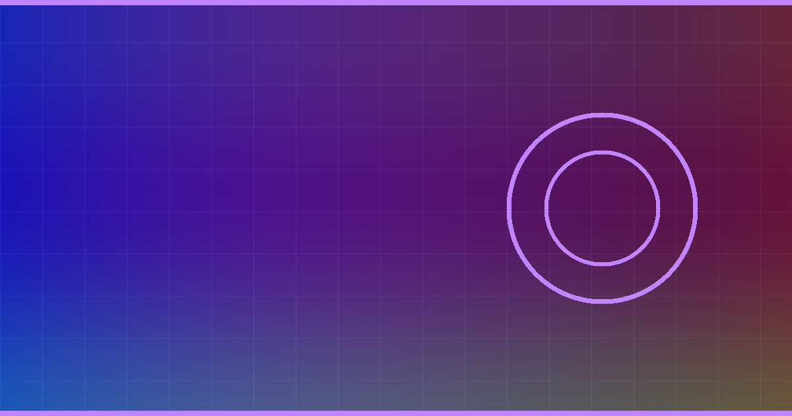

White-Box Layerwise Representation Stability & Reasoning Trace Entropy (LRS-RTE)
for Main Track (aimo_main_track.zip), Small Models Track (aimo_small_track.zip),
and Technical Writeup Track (AIMO_INTERP_REPORT.md).

# Bound algebraic variable swap (x<->y, n<->k, a<->b): # Probes hidden states at 50%, 75%, 90%, 100% transformer depth. # Robust mathematical reasoning maps P and P' to colinear # launchpad representations (high S_cos & norm ratio).
score = (
0.38 * rep_stability
+ 0.12 * norm_stability
+ 0.22 * top1_top2_logprob_margin
+ 0.14 * (1.0 - top64_shannon_entropy)
+ 0.14 * structural_fragility_prior
)